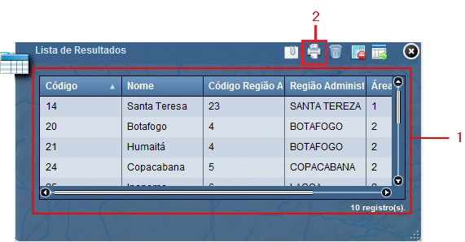

Imprimir Resultados
Imprime as informações da Lista de Resultados.
Passos para imprimir resultados:
1 - Certificar-se de que contenham informações na lista de resultados;

2 - Clicar sobre o símbolo "Imprimir resultados".
Nota: informações sobre configurar impressão poderão ser obtidas na opção: Configurar Impressão deste documento.